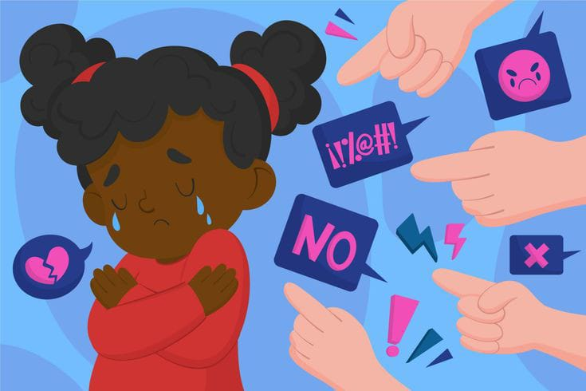

Bullying(escolar)
Consiste en expresar de manera directa o indirecta entre las alumnas
y/o alumnos palabras desagradables o agresivas cuya intención sea
humillar, amenazar o intimidar al otro. Se incluyen burlas, insultos,
comentarios sexuales inapropiados, provocaciones.
5 tipos de acoso escolar

Bullying físico: Las agresiones y peleas que resultan del bullying fuera
de las instituciones educativas pueden tener graves consecuencias para
todos los involucrados: Para las Víctimas: Las víctimas de bullying
pueden sufrir lesiones físicas, además de un trauma emocional
significativo.
bullying verbal:Consiste en expresar de manera directa o indirecta
entre las alumnas y/o alumnos palabras desagradables o agresivas
cuya intención sea humillar, amenazar o intimidar al otro. Se incluyen
burlas, insultos, comentarios sexuales inapropiados, provocaciones.
bullying psicologico: Se manifiesta a espaldas de la víctima. Su objetivo
es deshonrarla y evitar que se integre a algún grupo. Esta “no
integración” de la víctima se detecta cuando se ha normalizado su
aislamiento. Bullying verbal, es el más frecuente.
¿Cuáles son las causas del bullying psicológico?
La práctica del bullying o acoso escolar tiene como causa principal el
entorno familiar, víctimas y agresores tienen antecedentes familiares
asociados a padres autoritarios, sobreprotectores, violencia doméstica y
falta de comunicación.
¿Cómo puedo evitar el bullying psicológico?
Trate de no demostrar enojo ni llorar. Hay que decirle con calma al
acosador que deje de intimidarlo, o, simplemente, alejarse para evitar
problemas. Estar siempre acompañado: Siempre que sea posible, evite
que ocurran situaciones en sitios donde no haya otros estudiantes o
maestro
bullying sexual: El acoso puede incluir “acoso sexual” o avances
sexuales indeseados, solicitudes de favores sexuales y otro tipo de
acoso verbal o físico de naturaleza sexual. El acoso no tiene que ser
exclusivamente de naturaleza sexual, sino que también puede incluir
comentarios ofensivos sobre el sexo de una persona.
Entre las conductas de acoso sexual, se incluyen la siguientes: bromear
sobre la orientación sexual de alguien o hacer bromas, comentarios o
gestos de carácter sexual. Propagar rumores sexuales (sea en persona,
mediante mensajes de texto o en las redes sociales)
¿Qué hacer en caso de bullying sexual?
Todos deberíamos tomar medidas en contra de la violencia sexual en la
comunidad.
1. Denuncie.
2. Ayude a crear un ambiente de trabajo o escolar seguro.
3. Ofrezca apoyo.
4. Eduque a sus hijos.
5. Enséñeles a los adolescentes acerca del consentimiento.
6. Cree una distracción.
7. Pregunte directamente.
8. Diríjase a una autoridad.
9. Bullying social.
bullying social:Consiste en lesionar emocionales aquella que
busca aislar o excluir al niño o adolescente de un grupo social.
Esto lo logran a través de la discriminación social o económica,
tratos indiferentes, entre otros.mente las relaciones de una
alumna o un alumno con otro u otros, aislarlo, no tomarlo en
cuenta o marginarlo. Puede ser directo o indirecto, como divulgar
rumores acerca de sus actividades personales y avergonzarlo en publico